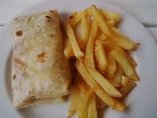

Kasi Rotti and Chips dish.

This is our Kasi Roti and Chips dish enjoy with a dash of hot cheese,
it will surely sizzle your taste buds.
Ingredients of our chips and Rotti dish.
- Flour
- Spring water
- Fresh Potatoes
Preparation steps of our dish.
- Mix your Flour and water to make a dough.
- When your dough is ready, prepare a pan with hot oil.
- Roll the dough into thin slices of circles.
- Fry each side of the Rotti for about 3 min.
- Fry your prepared potatoes to make chips.
- Serve and enjoy.